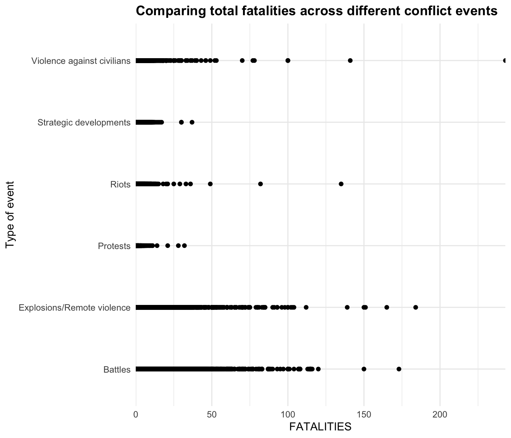

Higher intensity conflict events have higher fatalities
Comparing fatalities acorss Conflict Event types
Tanvi Dani 1
dani.tanvi@gmail.com
1 School of International Service, American University, Washington, D.C.
Introduction
This poster touches briefly on the connection between the type of conflict event and the number of fatalities occurring due to it. The poster displays tables and graphs to better understand the distribution of fatalities across different event types and a linear regression model estimating the impact of the conflcit happening in different regions of the world on the number of fatalities.
Objectives
- Null hypothesis- There is no relationship between the type of conflict event and the number of fatalities.
- Alternate Hypothesis- There is a relationship between the type of conflict event and the number of fatalities observed.
Methods
For the analysis, I am using quantitative methods. The research focuses on analyzing the relationship between 2 variables- FATALITIES (numeric) and EVENT_TYPE (categorical) from the ACLED Asia-Pacific dataset. In this research, the Event type is the Independent variable (Predictor variable) and Fatalities is the Dependent variable. The regression model at the end of the poster predicts whether there is a significant relationship between the type of conflicting event and the number of fatalities.
Results
Below 2 graphs represent the distribution of total and mean fatalities across conflict event types
Description of Data

Figure 1: Graphs depicting fatalities

(#fig:Graph 2)Graphs depicting fatalities
A table comparing the average number of fatalities associated with different event types:
| EVENT_TYPE | mean |
|---|---|
| Battles | 2.9 |
| Explosions/Remote violence | 2.2 |
| Protests | 0.0 |
| Riots | 0.1 |
| Strategic developments | 0.1 |
| Violence against civilians | 1.0 |
Regression table explaining the means of each event type and Fatalities
| Dependent variable: | |
| FATALITIES | |
| EVENT_TYPEExplosions/Remote violence | -0.7*** |
| (0.02) | |
| EVENT_TYPEProtests | -2.9*** |
| (0.01) | |
| EVENT_TYPERiots | -2.7*** |
| (0.02) | |
| EVENT_TYPEStrategic developments | -2.8*** |
| (0.02) | |
| EVENT_TYPEViolence against civilians | -1.9*** |
| (0.02) | |
| Constant | 2.9*** |
| (0.01) | |
| Observations | 471,860 |
| Note: | p<0.1; p<0.05; p<0.01 |
From the table and the regression table above, we can see that the category “Battles” is the excluded category in the regression table, which is the constant 2.87 ~ 2.9.
The constant represents the expected outcome when the predictors equal zero. So, the expected mean fatalities when Event type is Battles is 2.9. Similarly, the the mean fatalities during explosions/remote violence is the difference between the constant and the coefficient corresponding to that category in the regression table which is 2.871- 0.658= 2.2.
The coefficients on the included categories represent the difference in means relative to this excluded category. The mean fatalities in all categories is less than the constant (Battles) category and the difference is statistically significant in all cases.
Significance of the regression model
According to the ANOVA analysis, the variable EVENT_TYPE has a df value of 5, an F-value of 12530, and is statistically significant in explaining the number of fatalities.
Findings
From the graphs and the analysis presented in this poster, we can observe that higher intensity conflict events like battles and explosions/remote violence experience greater number of fatalities and the result is statistically significant. On the other hand, the mean number of fatalities in protests and riots is significantly lower. These observations are statistically significant in the Asia Pacific region, which the ACLED data is based on.